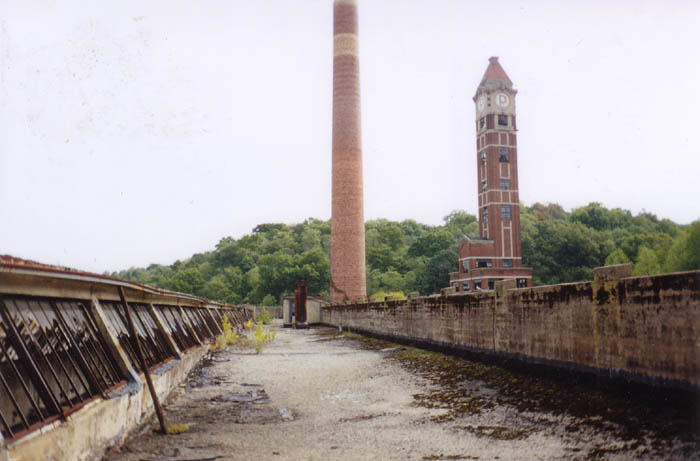
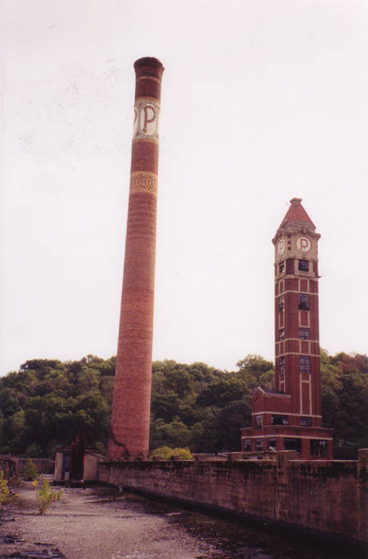
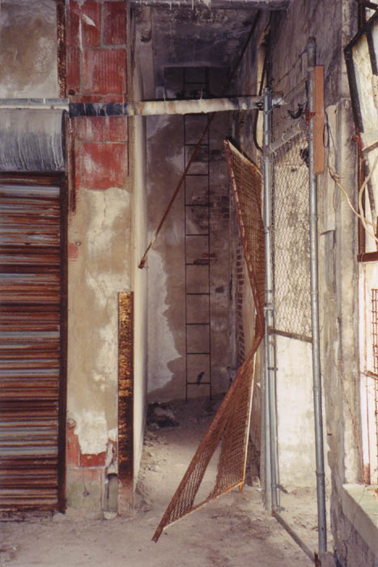
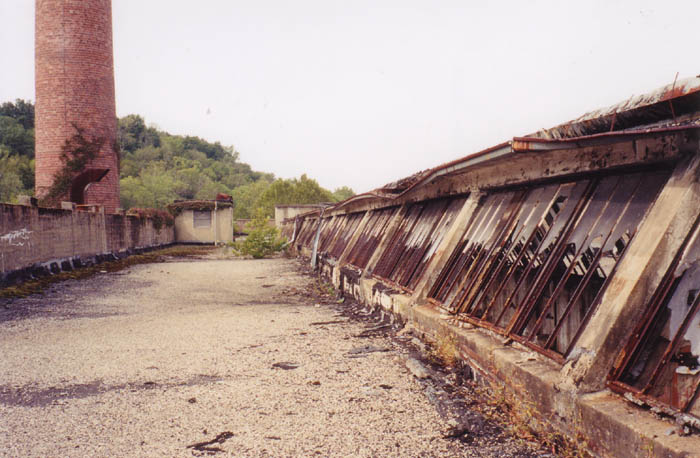

The most visible part of the Peters Cartridge Co. is the dual tower and smokestack. The shot tower is a good ten stories tall, and the smokestack is even higher than that. As you can see, both have a letter P monogrammed on them in tile.

The shot tower is part of any powder plant; they use it to pour liquid metal from a height into water below, which causes it to cool suddenly and solidify. The Peters plant channeled a creek through the building for this purpose.

From the top floor in the main building it's possible to either climb the stairs or a ladder and reach the roof, which runs along either side of a raised skylight.

The view from up here is very good, but not as good as it must be from the top of the shot tower itself. Unfortunately we weren't able to get into the tower; the new owner apparently locks that part up pretty well.
Main Page
. . . . .
Main Floors
. . . . .
Grounds + Outbuildings
. . . . .
Roof + Tower
. . . . .
Hauntings
Back